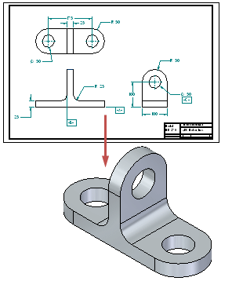
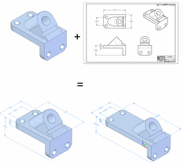

Create 3D command
You can use the Create 3D command to create dimensioned sketches in a part, sheet metal, or assembly document from 2D drawing geometry in a draft document. You can create a new model from the sketches, and you can add sketches to an existing model. This can be useful when:
-
You have legacy 2D drawings for which you need a 3D model.
-
You want to update a 3D model with the manufacturing dimensions on a drawing.
When you select the Create 3D command, the Create 3D dialog box guides you through the process of:
-
Adding geometry and dimensions to a new model document.

-
Adding geometry and dimensions to an existing model document.

In web help, you can practice with the Solid Edge tutorial, Modeling Parts from Drawing Views, which you can launch from the Tutorials collection.